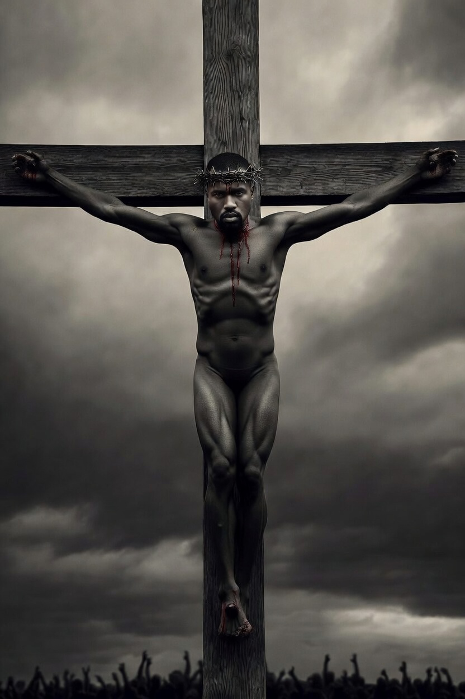
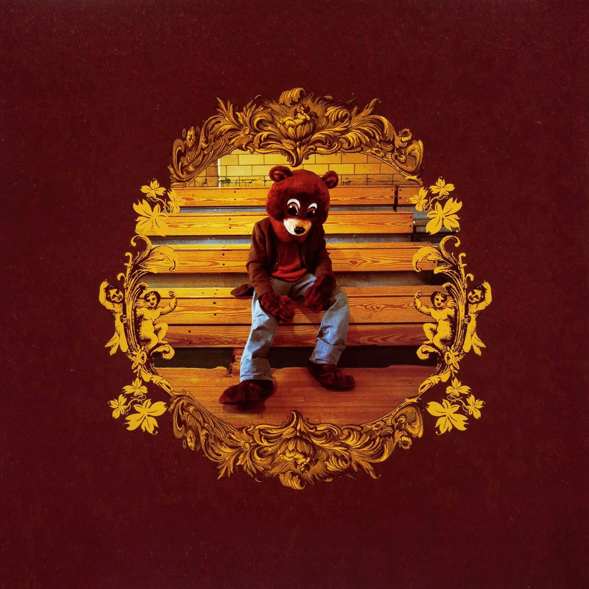
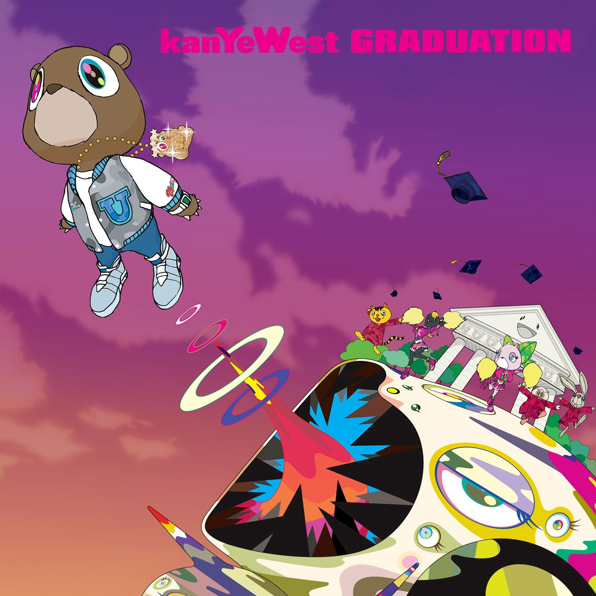
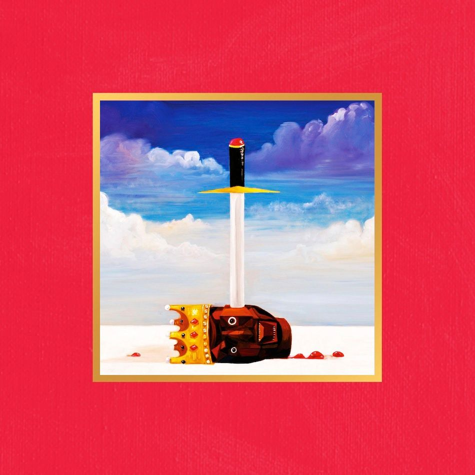
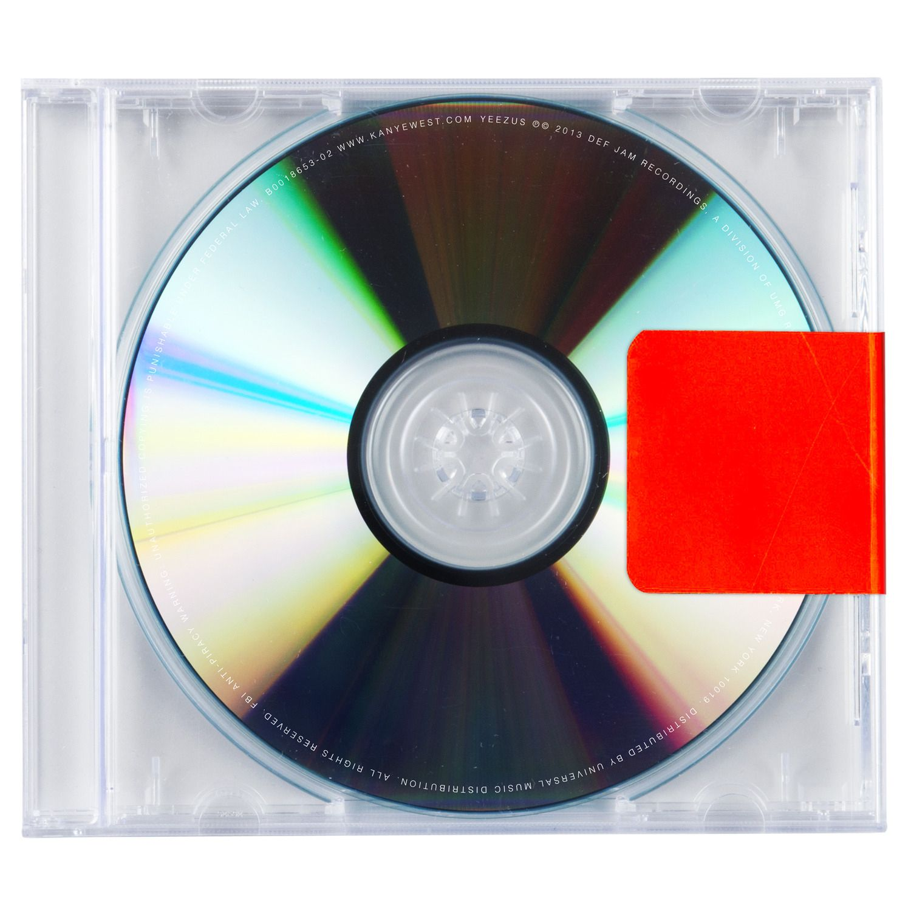
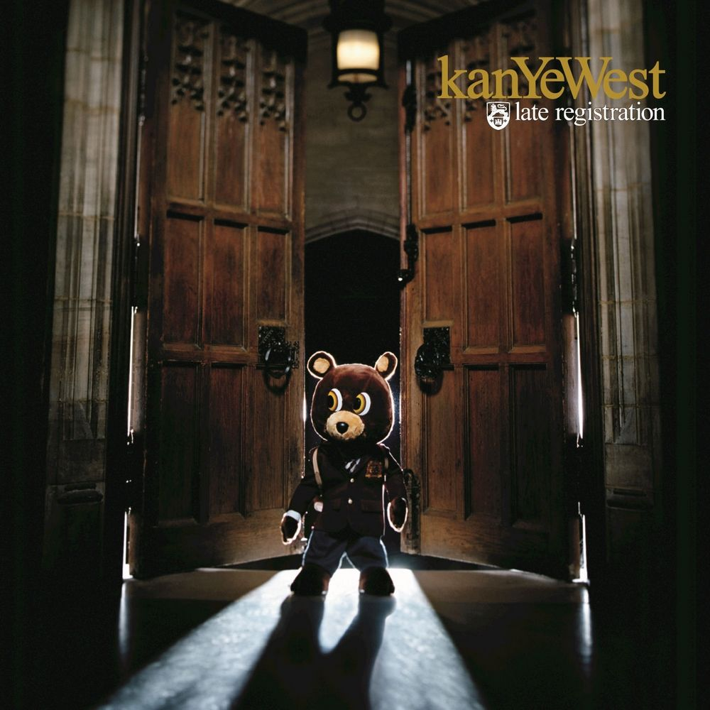
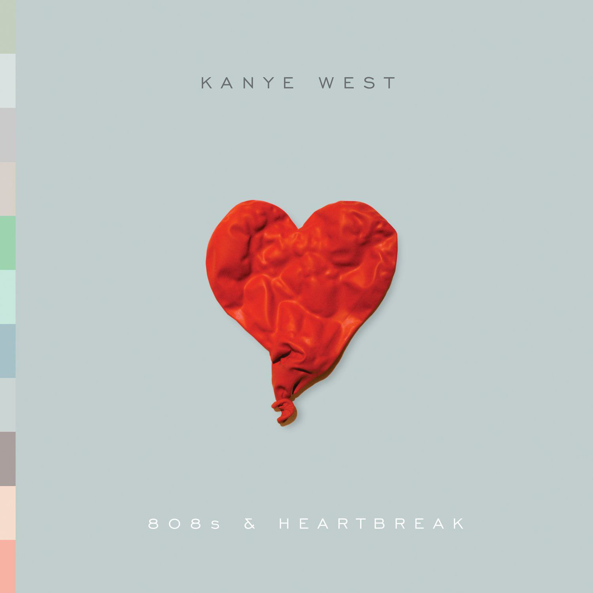
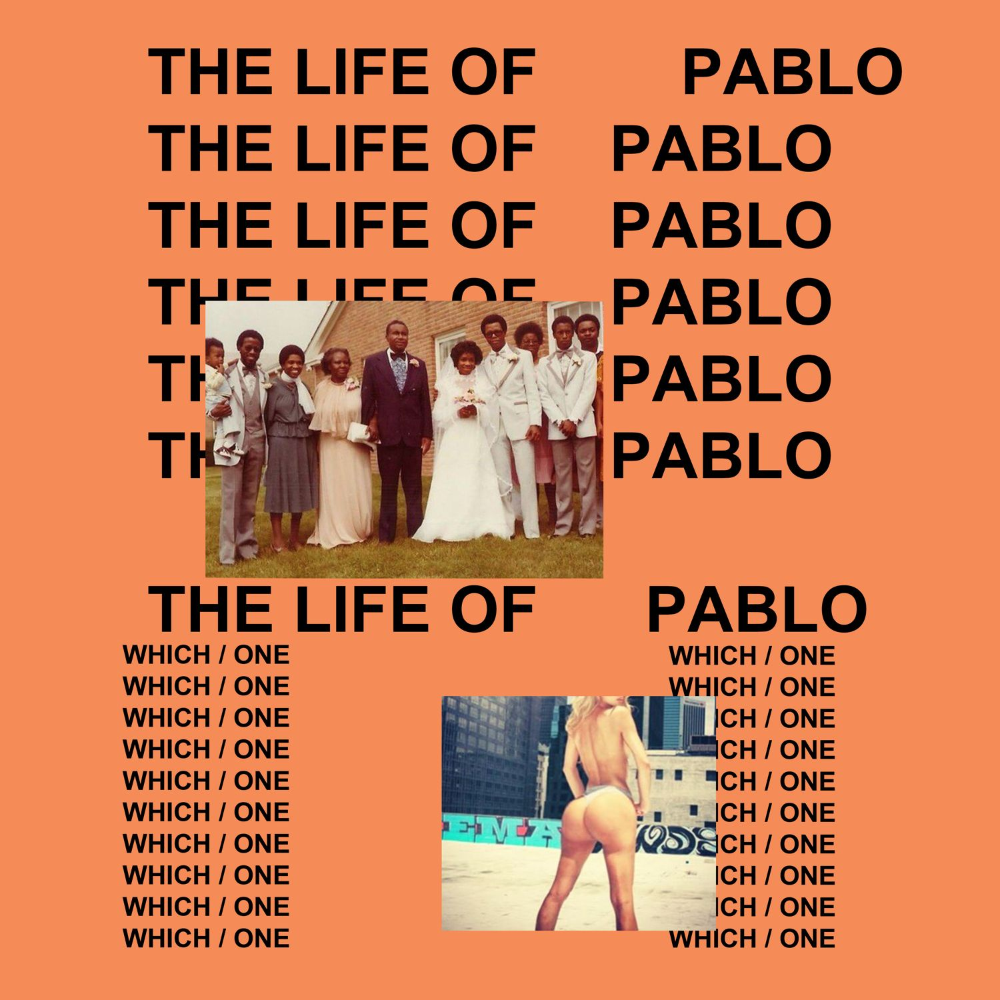
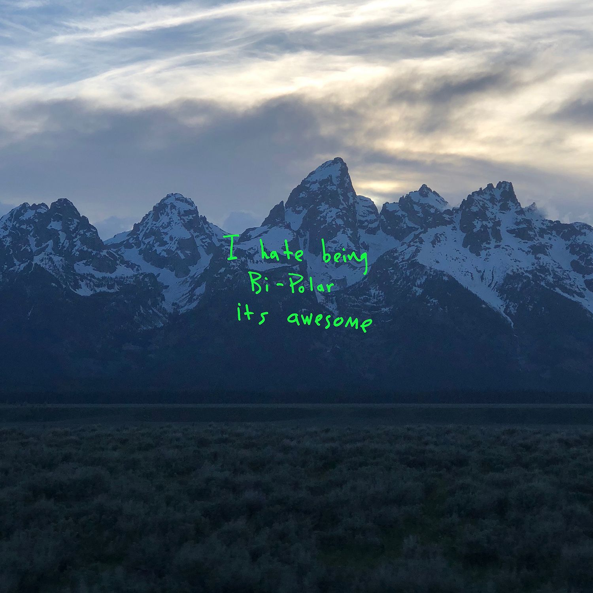
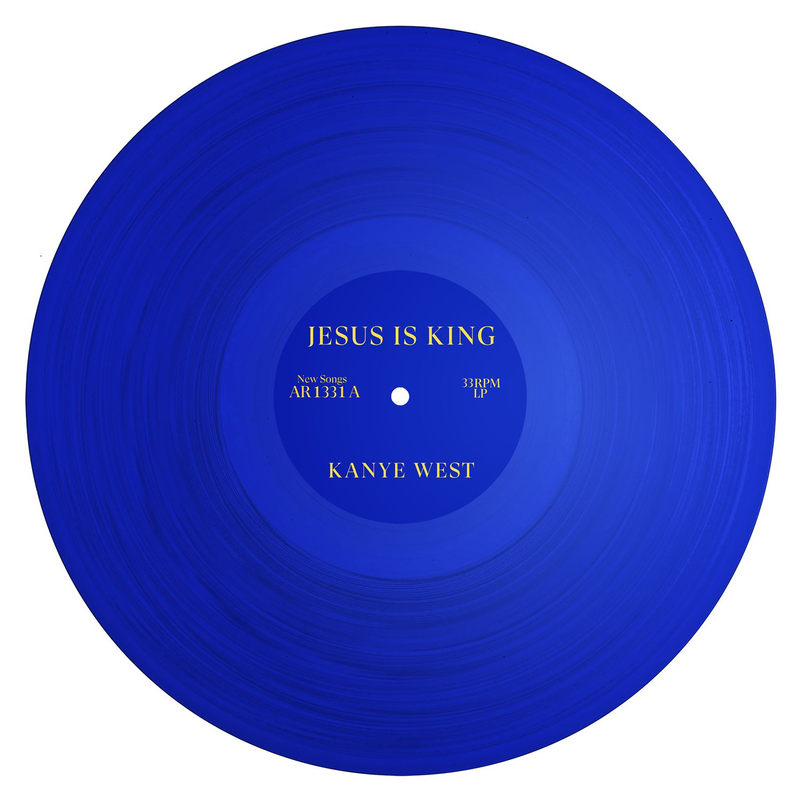

From a kid who nearly died in a car crash to a man who declared himself a god. Ten albums. Three personas. One relentless, maddening, undeniable genius. This is the story of the most important, polarizing, and inexplicable artist of his generation.
Kanye Omari West is born to Donda Williams and Ray West. His parents divorce when he is three. He moves to Chicago with his mother, an English professor, who shapes his intellectual ambition and willingness to challenge authority.
Growing up middle-class in a city defined by poverty and violence gives Kanye a unique vantage point. He doesn't have to rap about the streets because he wasn't in them — and he knows it. That self-awareness becomes the engine of his art.
He enrolls at Chicago State University but drops out to pursue music. The decision horrifies his family. His mother supports him anyway. The Dropout concept — rejecting institutional paths in favor of creative conviction — is already forming.
Kanye carves a lane as a top-tier producer for Jay-Z, Alicia Keys, and Ludacris. But Roc-A-Fella won't sign him as a rapper — he doesn't fit the mold. The rejection fuels a hunger that would define his entire career.
A near-fatal car accident shatters his jaw. Wired shut and recovering, Kanye records "Through the Wire" with his mouth literally swollen shut — rapping through a straw. The song sets the template: personal vulnerability as artistic capital.
His debut redefines what rap could be. Soul samples, chipmunk vocals, self-deprecating humor, pride, and God — all on one record. It goes quadruple platinum. The Dropout Bear becomes an icon. The industry scrambles to understand him.
Recorded with orchestral arranger Jon Brion, Late Registration is more ambitious and emotionally complex than the debut. "Gold Digger" becomes his first No.1 single. "Heard 'Em Say" features Adam Levine. The sonic palette is expanding fast.
During a live Hurricane Katrina telethon, Kanye goes off-script: "George Bush doesn't care about Black people." The line airs across America. It's the first time the world sees what happens when Kanye speaks without a filter. It won't be the last.
I'm not a businessman. I'm a business, man.
— Jay-Z, Watch the Throne (2011) — a line Kanye helped embody more than anyone
Kanye vs. 50 Cent. Two albums released the same day in a media-coordinated battle. Graduation wins decisively — 957k copies to 50's 691k in the first week. 50 Cent had promised to retire if he lost. The era of street rap as the genre's dominant force begins to crack.
Takashi Murakami designs the album artwork and "Good Morning" music video. It's the moment Kanye explicitly positions himself as an artist beyond music — fashion, visual art, and pop culture are all part of the project now.
Kanye's mother dies from post-surgical complications. She was 58. The grief is unspeakable. The music that follows — 808s & Heartbreak — will be its direct consequence. Everything after this moment is shadowed by her absence.
He breaks up with his fiancée. His mother is gone. He picks up an Auto-Tune processor and makes an album about being hollow inside. No rapping, only singing. Critics are uncertain. Drake, Kid Cudi, Travis Scott, and The Weeknd are all taking notes.




Kanye walks on stage during Taylor Swift's acceptance speech at the MTV VMAs: "Ima let you finish, but Beyoncé had one of the best videos of all time." The internet melts. He becomes a meme. President Obama calls him a jackass. The exile begins.
Retreating to Oahu, Kanye assembles an A-list creative camp — Bon Iver, Rick Ross, Kid Cudi, Nicki Minaj, Jay-Z, Raekwon, Pusha T — and works in marathon sessions. The goal: make an album so undeniable no one can dismiss him again.
Universally acclaimed on release — Pitchfork gives it a perfect 10, a rare honor. Every track is maximalist and immaculate. "Runaway" becomes his defining artistic statement. The Nicki Minaj verse on "Monster" is widely called the best verse of the decade.
With Jay-Z, he makes the first major album to go digital-only at launch — a move that changes the industry. Two of hip-hop's biggest egos on one record, recorded in luxury hotels, released to massive commercial and critical acclaim. Hip-hop's Odd Couple.
No one man should have all that power.
— Kanye West, Power (2010) — My Beautiful Dark Twisted Fantasy
Stripped bare. No artwork. A plain CD in shrink wrap with a red piece of tape. Rick Rubin helps edit it down in the final days. Industrial, abrasive, confrontational. The most naked statement of ego in the catalog. Divisive and decade-defining.
After being rejected by the fashion establishment, Kanye forces his way in. His Adidas partnership and Yeezy line redefine sneaker culture. The first Yeezy 750 Boost drop in 2015 creates lines around the block globally. Streetwear and high fashion collapse into one.
First album released exclusively on Tidal. Then updated after release — the first living, breathing streaming album. Chaotic, gospel-infused, fractured, brilliant. The "Famous" video and Taylor Swift controversy reignites old wounds. Kim's sex tape. Jesus. All at once.
Mid-concert in Sacramento, Kanye rants for 20 minutes and cancels the remaining Saint Pablo Tour dates. Days later he's hospitalized for exhaustion and psychosis. The episode forces a public reckoning with mental health, medication, and what it costs to be Kanye.
A TMZ interview in which Kanye suggests 400 years of slavery was a "choice" shocks the world. His MAGA alignment and embrace of right-wing politics divide his fanbase irrevocably. He claims bipolar disorder as a superpower. Some hear confession. Some see crisis.
A complete pivot to Christian gospel. The Sunday Service performances — choir, white robes, mountainside — become a cultural phenomenon. The album wins the Grammy for Best Contemporary Christian Music Album. Critics are polarized. His congregation is real.
Three listening events — including a Chicago stadium show where he lived in the arena for weeks — turn the album release into performance art. The album arrives unfinished, sprawling, raw. His ex-wife Kim, estranged daughter North, and his mother's ghost haunt every track.
Following a series of antisemitic statements — including "death con 3 on Jewish people" on Twitter — Adidas terminates the Yeezy partnership, costing Ye an estimated $1.5 billion and his billionaire status overnight. Gap and Balenciaga follow. The industry walks away.
I am a God. Hurry up with my damn massage.
— Kanye West, I Am a God (2013) — Yeezus
After Adidas terminated the Yeezy deal in October 2022, Ye's public presence shifted from provocateur to something harder to categorize. His X account became a channel for antisemitic conspiracy theories, erratic business announcements, attacks on former friends, declarations of faith, and streams of consciousness that arrived at 3am and were often deleted within hours. What follows are reconstructions of his most documented posts — not verbatim quotes, but faithful to what was said and the context that surrounded them.
Ten studio albums spanning two decades. Each one a distinct world. Click any album to open a mini-player with representative tracks.





English professor, mother, manager, and the emotional core of Kanye's entire mythos. Her death in 2007 fractures him permanently and inspires some of his most raw work.
Signed Kanye to Roc-A-Fella as a producer. Gave him the platform. Later collaborated on Watch the Throne. Their friendship and falling out mirrors Kanye's own arc from outsider to peer to pariah.
Chicago's finest producer and Kanye's earliest mentor. Taught him how to flip soul samples. The foundational relationship that made the College Dropout sound possible.
Childhood friend, Kanye's personal assistant, creative director, and ultimately the founder of Off-White and artistic director of Louis Vuitton. Their shared vision reshaped fashion and streetwear permanently.
Called in at the last moment to strip down Yeezus. In a week of editing sessions, he helped transform an overstuffed album into one of the most aggressive, minimalist records in rap history.
Signed to GOOD Music, his influence on 808s & Heartbreak and the emotional vulnerability of the era cannot be overstated. Cudi unlocked something in Kanye about making pain visible in music.
The marriage of two of the most famous people on earth was one of the defining cultural events of the 2010s. Their divorce in 2021 and bitter public separation becomes another album's worth of material.
The Japanese contemporary artist created the Graduation artwork and animated music video, cementing Kanye's crossover into the fine art world and setting the template for musician-artist collaborations.
The longtime mix engineer and collaborator whose fingerprints are on nearly every Kanye album. Where Kanye hears the vision, Dean builds the architecture that makes it real.
Emotionally indebted to 808s & Heartbreak in ways Drake has openly acknowledged. The soft-rap emotional confessional that Kanye invented in 2008, Drake industrialized into the dominant pop sound of the 2010s.
The question hanging over Ye's legacy is not whether he'll make another great album — it's whether the world will be ready to receive it. His antisemitic statements cost him partnerships, friends, and $1.5 billion overnight. The path back, if there is one, runs through actions not music.
After Adidas, Gap, and Balenciaga all severed ties, Ye launched Yeezy independently — selling directly through Yeezy.com. The question is whether his customer loyalty exceeds his cultural exile. The sneakers still sell. The man remains radioactive.
North West has appeared on stage with her father, rapped on tracks, and demonstrated a comfort with creative output that mirrors his own early ambition. Whatever comes next for Kanye's legacy will be shaped in part by how his children choose to engage with it.
The story of Kanye West is one of the most dramatic biographical narratives in popular culture. How that story gets told — documentary, drama, authorized or not — will define how history situates him: genius, cautionary tale, or both simultaneously.
From a self-taught Chicago kid flipping soul samples in his bedroom to the most important, polarizing, and inexplicable artist of his generation — every era, every breakdown, every reinvention.